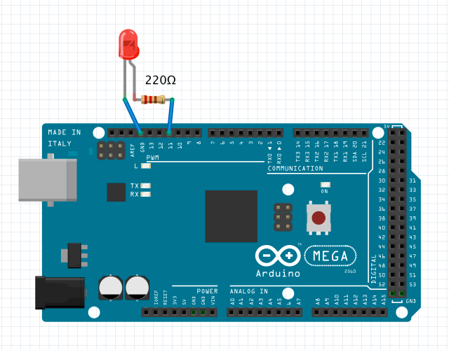
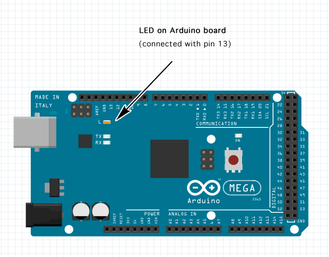

var led1 = new DigitalOut(); led1.setup(1, 13); // set up a digital output with pin 13 on unit 1 led1.setValue(1); // the digital output is set to high level, turn on the LED led1.setValue(0); // the digital output is set to low level, turn off the LED led1.pulse(1, 1000); // create a pulse (high level, pulse width is 1000us) led1.pulse(0, 5000); // create a pulse (low level, pulse width is 5000us)

var led2 = new DigitalOut(); led2.setup(1, 11); // set up a digital output with pin 11 on unit 1 led2.setPwmValue(0); // the pwm output is set to 0, turn off the LED led2.setPwmValue(127); // the pwm output is set to 127, 50% LED brightness led2.setPwmValue(255); // the pwm output is set to 255, 100% LED brightness
The PWM output can be set to a number value ranges between 0 and 255.
Number 3, 5, 6, 9, 10, 11 pins are available for PWM output on an Arduino UNO board.
Number 2, 3, 4, 5, 6, 7, 8, 9, 10, 11, 12, 13, 44, 45, 46 pins are available for PWM output
on an Arduino MEGA board.
(pin 12, pin 13 are occupied and reserved by h5control system)

var led1 = new DigitalOut();
led1.setup(1, 13); // set up a digital output for pin 13 on unit 1
var ledState = 0; // set up a timer for switching led state frequently
setInterval(
function() {
ledState = (ledState ? 0 : 1);
led1.setValue(ledState);
},
500);
DigitalOut
setup(unit, pin)
initialize a digital output object with a specified pin on a specified unit.
return value: true if successful, otherwise false.
setValue(value)
set number 0 or 1 to parameter value for changing state of the digital output signal.
return value: true if successful, otherwise false.
setPwmValue(value)
set a number value between 0 to 255 to the parameter value for changing duty ratio of the PWM output signal.
return value: true if successful, otherwise false.
setPwmPeriod(period)
set period of the PWM output (no implementation in the present version).
return value: true if successful, otherwise false.
pulse(value, pw)
create a pulse with the specified voltage level and pulse width.
set parameter value as 1 for a pulse with high voltage level output, 0 for a pulse with low voltage level output.
set parameter pw as a microsecond value to specify the pulse width.
return value: true if successful, otherwise false.
getValue()
request to get the present state of the output signal, an event callback whenGetValue() will be received later.
return value: the output signal value, number 0 or number 1
getPwmValue()
request to get the present value of the PWM output signal, an event callback whenGetPwmValue() will be received later.
return value: the PWM output value, a number between 0 to 255
Return Value Note:
The function will return a value when your h5control program uses waitRsp mode, but no return value when uses nowaitRsp mode.
whenSetup(done)
receive the callback when setup done. parameter done is true if successful or false otherwise.
whenSetValue(value)
receive the callback when digital output value has been set.
whenSetPwmValue(value)
receive the callback when PWM output value has been set.
whenSetPwmPeriod(period)
receive the callback when PWM output period has been set.
whenPulse(value, pw)
receive the callback when a pulse has been just created.
whenGetValue(value)
receive the callback to get the present digital output value after called function getValue().
whenGetPwmValue(value)
receive the callback to get the present PWM output value after called function getPwmValue().